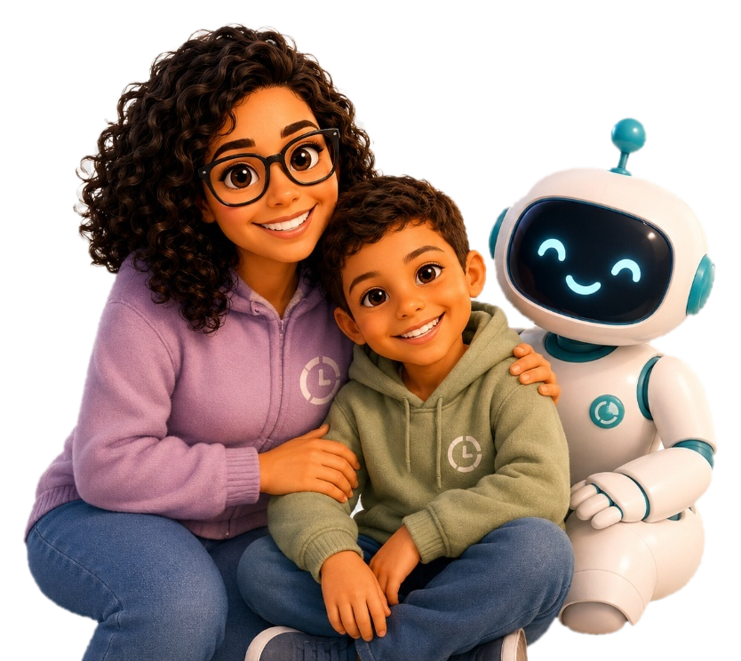

Nascemos para tornar o aprendizado mais leve, humano e possível. 💜
O NoSeuTempo nasceu da vida real, do desejo de criar caminhos de aprendizagem mais respeitosos, acolhedores e adaptáveis para cada pessoa.
Aqui, a gente não força ninguém a se encaixar. A gente adapta o caminho. 💜

Nossa História
O NoSeuTempo nasceu onde a vida realmente acontece: dentro de casa. Ele ganhou forma no dia a dia da vida real, entre desafios, descobertas e dedicação.
Essa jornada começou de maneira profunda, sentida na pele na nossa rotina de mãe e filho neurodivergentes. Entre tentativas, pausas e recomeços, ficou claro que o desafio nunca foi a capacidade de aprender, mas a falta de caminhos que respeitassem o tempo, o fôlego e o jeito de cada um.
Foi desse desejo de transformar a realidade que nasceu o projeto: um espaço seguro, afetivo e estimulante, criado para que o aprendizado aconteça sem comparações, com adaptação real e acolhimento de verdade.
Quem é a Geni IA?
A Geni IA é a inteligência acolhedora do NoSeuTempo.
Ela foi criada para acompanhar o processo de aprendizagem de forma sensível, observando dificuldades, preferências e ritmos para adaptar caminhos de estudo com mais cuidado e personalização.
Inspirada na minha avó Geni, ela carrega a essência de quem ensina com paciência: explicar de outra forma, respeitar o tempo de cada pessoa e transformar o erro em possibilidade.
"Mais do que responder, a Geni IA ajuda a encontrar caminhos."
Para aprender com mais calma, respeito e sentido.
Acreditamos que aprender é um direito. E que cada pessoa merece encontrar o seu jeito, no seu tempo.
É por isso que o NoSeuTempo existe. Para caminhar ao seu lado, com respeito, leveza e propósito.